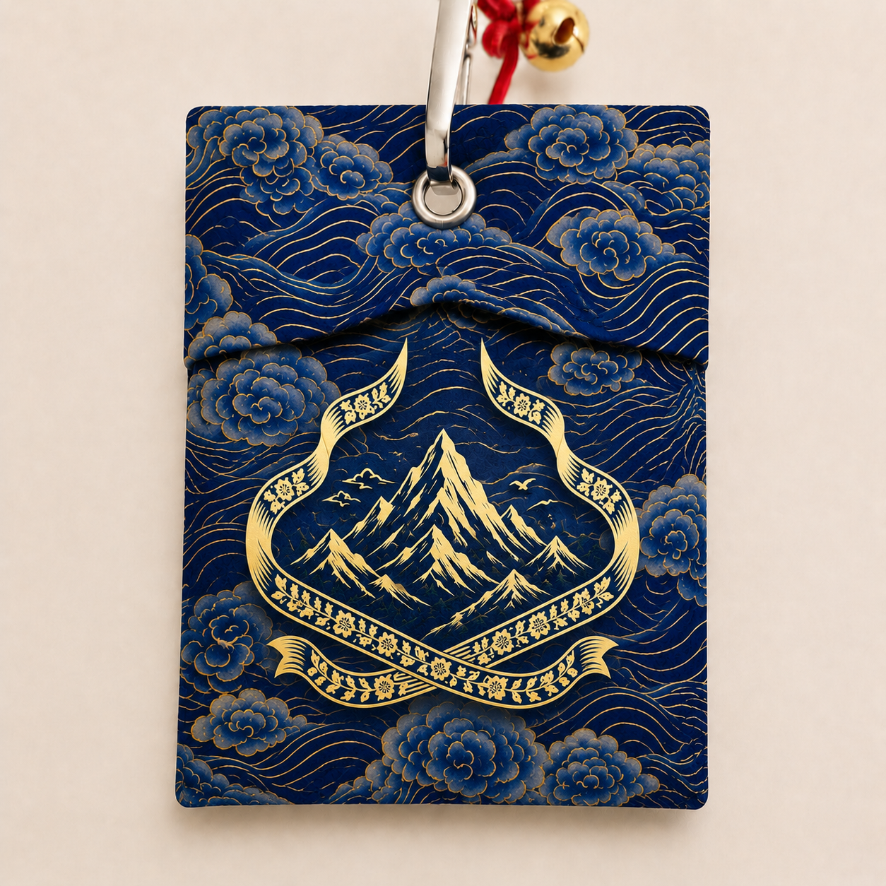
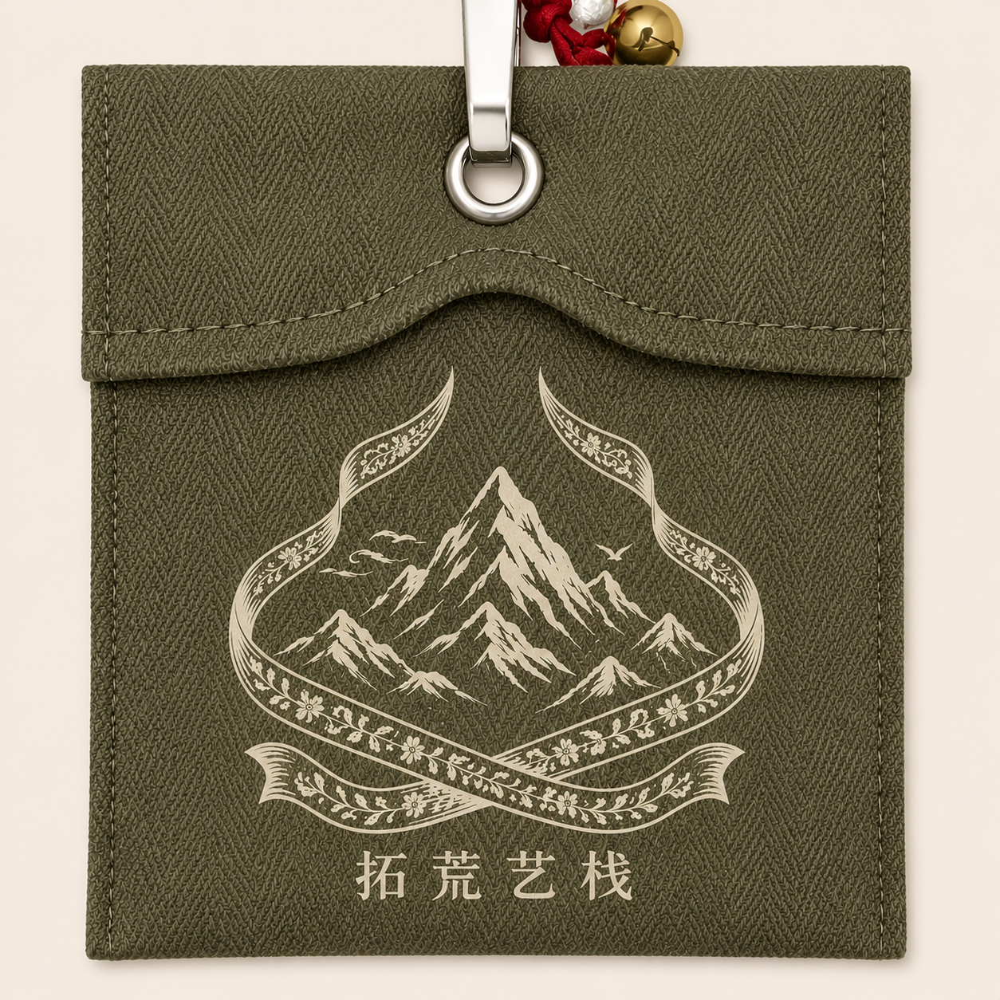
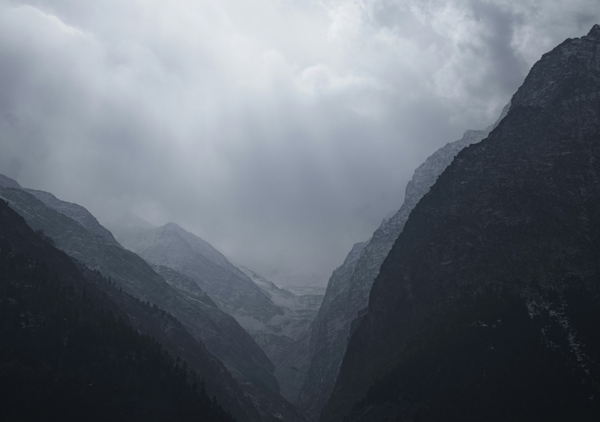
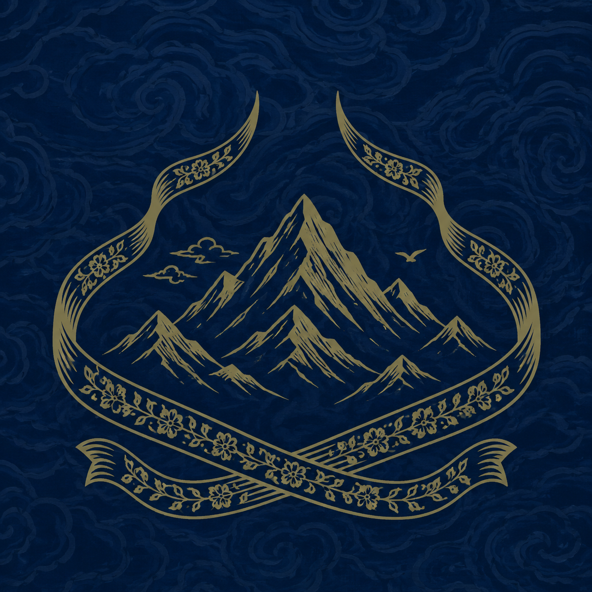
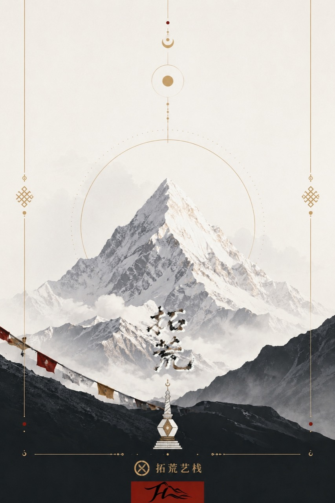
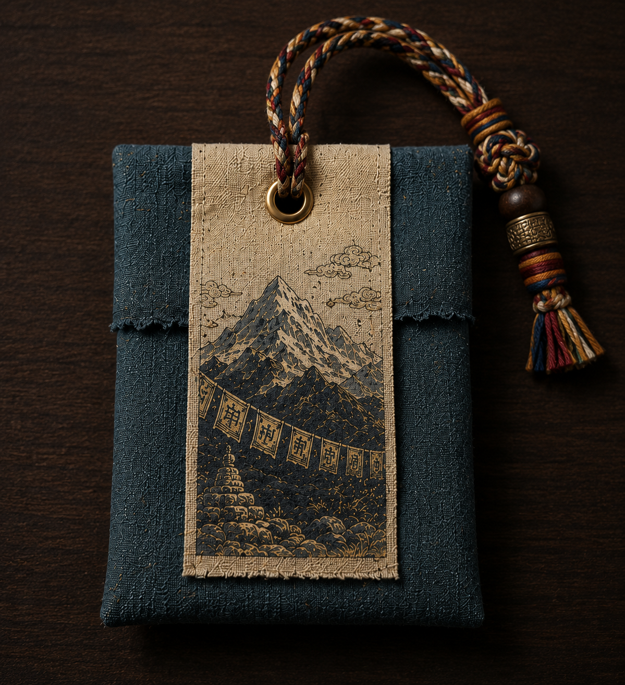
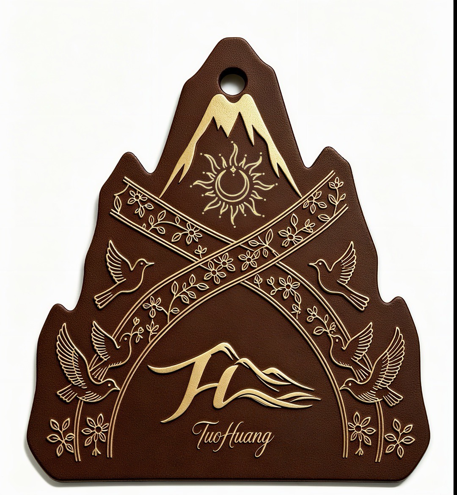

查看项目 ↗01 / OBJECT DESIGN
山行 · 随身的山野
香囊概念 / 产品视觉
设计札记 ＋
以随身香囊为载体，将山的轮廓、绳结与织物组合在一起。靛蓝与苔绿两种色彩方向，探索山野感如何进入日常穿戴。
展示内容为产品设计概念与 AI 辅助视觉探索。


你好，我是 Naso，也是「拓荒艺栈」的创办者。我喜欢山野的辽阔、旧物的肌理，以及手作留下的不完美。
我的创作游走在品牌设计、AI 视觉探索和文创物件之间。从一座山的轮廓，到一枚图形，再到一件可以随身携带的小物——我希望把自然里的感受，带回日常。
从山野出发，在材质、图形与影像之间探索。

查看项目 ↗香囊概念 / 产品视觉
以随身香囊为载体，将山的轮廓、绳结与织物组合在一起。靛蓝与苔绿两种色彩方向，探索山野感如何进入日常穿戴。
展示内容为产品设计概念与 AI 辅助视觉探索。


查看项目 ↗标识探索 / 视觉语言
把山峰的起伏转化为图形中心，以环绕的线条组织秩序。探索标识在织物、吊牌与品牌画面中的延展，让不同物件拥有相通的视觉气质。
拓荒艺栈品牌图形概念探索。

查看项目 ↗品牌海报 / AI 视觉
用雪山、留白和物件构建画面，让品牌故事从自然意象展开。探索 AI 辅助影像如何与中文排版、产品叙事形成完整的视觉表达。
品牌概念海报，包含 AI 生成影像。

查看项目 ↗材质研究 / 物件叙事
木的纹理、布的颗粒、绳结的松紧，构成一件小物的性格。通过材质组合与近景呈现，寻找朴素而有记忆点的产品语言。
材质搭配概念与 AI 辅助产品视觉。

AN INDEPENDENT BRAND BY NASO03 / MY BRAND · EST. 2024
给自由的灵感，一个落脚的地方。
拓荒，是走向未知；艺栈，是让创作停留。这里承载着我对旅行探索、手工艺与东方审美的兴趣，也是一场从想法走向物件的品牌实践。
从品牌定位、产品构想到视觉与内容，我在这个项目里不断学习，慢慢建立属于自己的表达。
聊聊品牌合作品牌调性、标识探索、海报与社交媒体视觉，让想法有清晰的样子。
概念影像、产品场景与创意画面，探索不同方向，再细化最有感觉的表达。
围绕旅行、自然与手作，探索产品概念、材质搭配和包装叙事。
EVERY GOOD THING STARTS WITH A CONVERSATION.
品牌合作、视觉共创，
或只是聊聊一个有趣的想法。